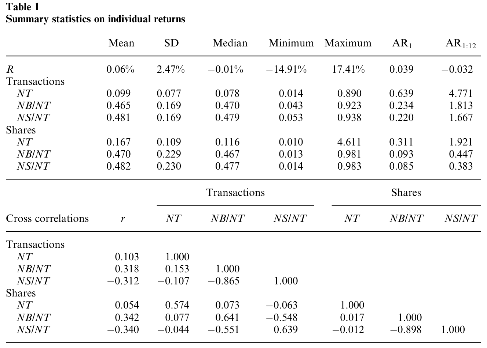
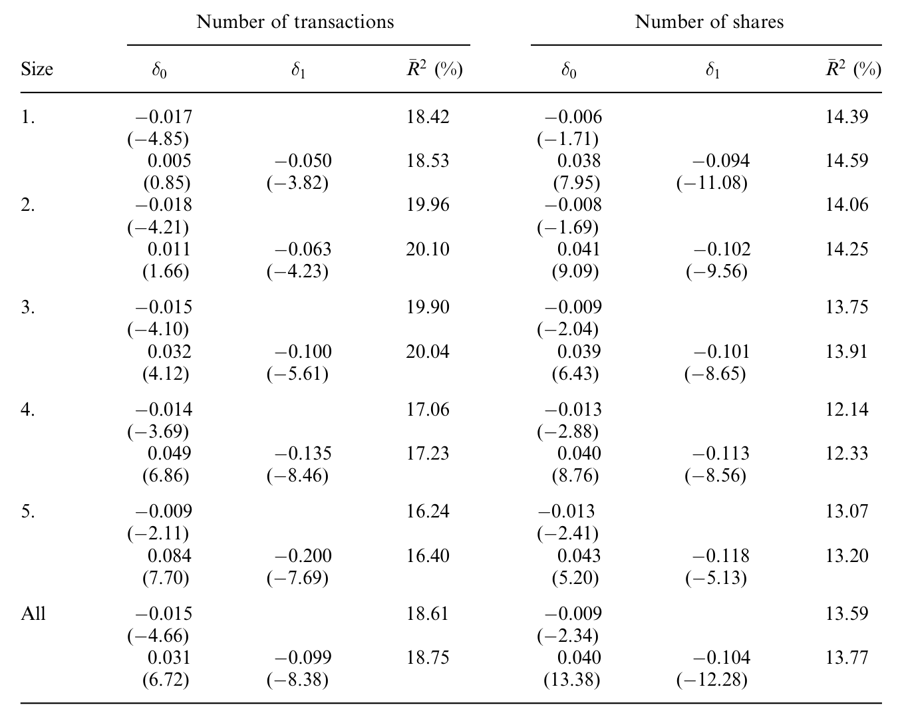
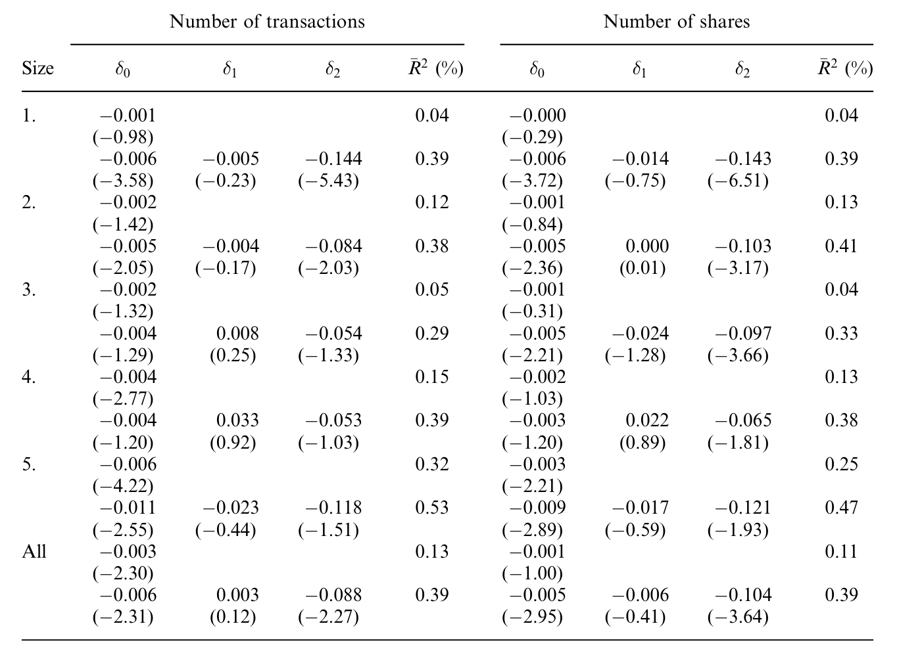
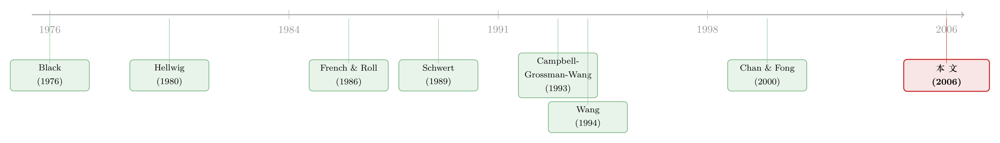

波动的不对称，原来是「谁在卖」决定的
本文读的是 Avramov, Chordia & Goyal (2006, Review of Financial Studies)：长期被归因于杠杆或时变预期收益的「不对称波动」，在日频上其实是交易行为写出来的——股价下跌后波动放大，是流动性驱动的羊群卖盘在推；股价上涨后波动收敛，是有信息的逆向卖盘在压。把「卖出活动」放进回归，那个臭名昭著的负系数就被完全吃掉了。
1 一个写在日线上的「怪现象」
先说一个几乎被当成常识的事实：股票的波动率和滞后收益是负相关的。今天跌了，明天往往更「抖」；今天涨了，明天反而更「稳」。这就是所谓的不对称波动 (asymmetric volatility)——一个从 Black (1976) 起就被反复记录、几乎进了教科书的「程式化事实 (stylized fact)」。
问题在于，为什么？
过去几十年，金融学给出了两个看起来都很体面的答案。可这篇文章一上来就把读者拽到一个让人不太舒服的角落：这两个答案，放到日频上，可能一个都站不住。
这正是全文的张力所在。不对称波动是真的、是稳健的，连日线上都赖着不走；但能解释它的那两套故事，偏偏都是「低频的故事」。那日线上的不对称，到底是谁写的？
2 两个旧答案，为什么在日频上失灵
第一个答案是杠杆效应 (leverage effect)，由 Black (1976) 和 Christie (1982) 提出。逻辑很直接：股价一跌，公司股权价值缩水，财务（与经营）杠杆被动升高，股权变得更「危险」，波动自然抬升。
第二个答案是时变预期收益 (time-varying expected returns)，由 Pindyck (1984)、French, Schwert & Stambaugh (1987)、Campbell & Hentschel (1992) 等人发展。逻辑反了过来：当市场预期波动要上升，投资者要求更高的回报，于是股价立刻下跌——是波动的变化「导致」了价格的下跌。
两套故事，方向恰好相反，但都能讲出不对称波动。然而作者的反问也很锋利：这两件事，真的会在「一天」之内发生吗？
杠杆呢？日内的杠杆变化是暂时的 (transitory)、经济意义上微不足道的；一家公司的财务结构不会因为今天跌了 3% 就真的「更危险」了。预期收益呢？它随商业周期变动——那是季度、年度的频率。作者干脆搬出 Cochrane (2001) 的原话来背书：
风险或风险厌恶在日频上发生变化是不可信的，但幸运的是，收益在日频上也不可预测。更合理的是风险与风险厌恶随商业周期变化——而那，恰恰是我们看到可预测超额收益的视野。
换句话说，Sims (1984)、Lehmann (1990) 早就强调，短区间内价格应近似一个鞅 (martingale)，基本面的系统性变化可以忽略。那么如果基本面在一天里几乎不动，日频上那个顽固的不对称波动，就只能来自别处。
来自哪里？French & Roll (1986) 留下过一句关键的话：是交易本身造成了波动 (trading causes volatility)。 这就是全文的转捩点。
3 识别策略：让那个「负系数」自己会动
接着，一个自然的问题是：怎么把「交易」请进波动的方程里？
作者沿用 Schwert (1990)、Jones, Kaul & Lipson (1994)、Chan & Fong (2000) 的两步法。第一步，把个股日收益对自己的 12 阶滞后、星期几虚拟变量、以及标准化的卖出交易做回归，取出「非预期收益」：
$$R_{i,t} = \sum_{k=1}^{5}\gamma_{i,k}D_{kt} + \sum_{k=1}^{12}\phi_{i,k}R_{i,t-k} + \theta_i\frac{NS_{i,t}}{NT_{i,t}} + \epsilon_{i,t}$$
这里 \(R_{i,t}\) 是个股收益，\(D_{kt}\) 是星期几虚拟变量，\(NS_{i,t}\) 是当日卖出（卖单笔数或卖出股数），\(NT_{i,t}\) 是当日总交易。残差 \(\epsilon_{i,t}\) 的绝对值，就是当日的波动度量。
第二步，才是真正关键的一步。把 \(|\epsilon_{i,t}|\) 回归到它自己的 12 阶滞后（波动有持续性）、当日总交易量（控制 Lamoureux & Lastrapes 1990 记录的量—波动关系），以及——核心来了——一个会随卖出强度变化的滞后收益项：
直觉是这样的：传统文献只看 \(\delta_0\)，\(M_t\) 是周一虚拟变量。一个负的 \(\delta_0\) 意味着——上一期非预期收益升高会压低波动、下跌会抬升波动，这正是不对称波动。而本文做的，是允许这个系数本身随「昨天卖了多少」而变。 如果 \(\delta_1\) 显著为负，就说明那个负系数不是天生的常数，而是被卖出活动「调」出来的。
这里还藏着一个精巧的处理：式(1)里已经把 \(NS_{i,t}/NT_{i,t}\) 放进去做正交化，于是式(2)里的非预期收益和卖出活动是正交的。这样就堵住了一个最自然的质疑——「卖出活动是不是只是替负收益打了个掩护？」答案是不会，二者已被剥离开。
4 数据
数据来自交易级数据库 ISSM（1988–1992）与 TAQ（1993–1998），覆盖 2232 只 NYSE 上市股票，样本期 1988 年 1 月至 1998 年 12 月，平均每年约 1326 只在样本内。每笔交易用 Lee & Ready (1991) 算法判定买卖方向。观测单位是「个股—日」。
一个容易被忽略但很要紧的细节：所有收益都用买卖价中点 (bid-ask midpoint) 计算，而非成交价。这样可以剔除买卖价跳动 (bid-ask bounce) 对波动的污染——Jegadeesh (1990) 指出跳动会制造负的序列相关，而本文用中点价后，一阶自相关 AR(1) = 0.039 反而是正的。
如表 1，日均收益 0.06%（中位数 -0.01%），日均成交 99 笔（中位数 78）、167,000 股（中位数 116,000）。买、卖占总交易的比例分别约 0.47 与 0.48（二者不加和到 1，因为还有无法判向的交易）。值得一提的是，收益与买单正相关（0.318）、与卖单负相关（-0.312），印证了买（卖）推高（压低）价格的常识。

Table 1: summarizes the cross-sectional statistics of the individualfirm
5 主要结果：负系数被「完全」吃掉了
先看基准。把 \(\delta_1\) 限制为 0、回到传统设定时，\(\delta_0\) 在每一个规模分组、以及全样本上都是负的。也就是说——不对称波动在日频上确实强劲存在。这一步先把张力坐实：旧理论解释不了它，但它就在那里。
然后是反转。一旦放开 \(\delta_1\)，把卖出活动的交互项请进来，结果立刻翻转：
- 全样本（以笔数衡量交易）：基础系数 \(\delta_0\) 由负转正，
δ0 = 0.031（t = 6.72）；交互系数 \(\delta_1\) 显著为负，δ1 = -0.099（t = -8.38）。 - 改用股数衡量，结论一致且更强：
δ0 = 0.040（t = 13.38），δ1 = -0.104（t = -12.28）。

Table 2: summarizes the results aggregated by size quintiles as well as
一正一负，意味着什么？意味着那个被记录了三十年的、波动对滞后收益回归中的负系数，完全可以归结为卖出活动与收益的交互。把卖出活动控制住，\(\delta_0\) 不再为负——不对称波动的「源头」被定位到了交易行为上。
机制也随之清晰：当上一日是负的非预期收益时，卖出活动越高，次日波动越大；当上一日是正的非预期收益时，卖出活动越高，次日波动反而越小。同一个「卖」，在涨和跌之后，对波动的作用方向竟然相反。
而且，这个 \(\delta_1\) 随规模单调变化：以笔数衡量，最大规模组的 \(\delta_1 = -0.200\)（t = -7.69），远比最小组的 -0.050 更陡。作者后续还直接检验并否决了杠杆假说——他们证明，即便对那些杠杆可忽略、甚至无杠杆的股票，卖出活动与次日波动的关系依然成立。这就把「是杠杆在作怪」这条退路彻底封死了。
（关于不对称在涨跌之间的不一致，另一个角度可参见《涨时各走各的，跌时一起跳水：给「不对称」一把无关模型的尺子》。）
6 谁在卖？——逆向、羊群，与一个理性预期的故事
但「卖出活动」本身还是个黑箱。真正关键的一步，是把卖单拆开。
作者借了一对古老的概念。Friedman (1953) 早就说过：非理性投资者高买低卖、扰动价格；理性投机者低买高卖、把价格拉回基本面。顺着这条线，作者定义：
- 逆向交易 (contrarian)：收益为正时的卖单——别人追涨我离场，被假设为有信息的 (informed)；
- 羊群交易 (herding)：收益为负时的卖单——别人砸盘我也砸，被假设为无信息的、流动性驱动的 (uninformed)。
羊群行为这个想法可以一路追到 Keynes 的「选美比赛」，也被 Froot, Scharfstein & Stein (1992)、De Long et al. (1990) 写进了正反馈模型：哪怕信息与基本面无关，投资者也会扎堆，从而抬高围绕基本面的波动。
那怎么验证「逆向=知情、羊群=无知」这个猜想？这里作者搬出了 Campbell, Grossman & Wang (1993，下称 CGW) 的噪声理性预期模型，而它的逻辑值得一步步讲清。
CGW 设定：风险厌恶的做市商被动吸收卖压。一次股价下跌，无非两种来源——
- 公开消息导致估值下修。这种情况下，价格调整到位，没有理由再反转；
- 无信息的流动性卖压。做市商要被补偿才肯接货，价格被暂时压低，事后会反转回去。
于是有了一个可检验的推论：有信息的交易→收益零自相关；无信息的交易→收益非零自相关（反转）。 序列相关检验恰好支持了猜想——正收益下的卖单（逆向）对个股自相关没有影响，而负收益下的卖单（羊群）则带来了价格反转。
如表 6，作者进一步按笔数和股数两种口径，把卖单拆成逆向与羊群，再看它们各自对次日波动的作用：与 Hellwig (1980)、Wang (1994) 的预测一致，有信息（逆向）交易降低波动，无信息（羊群）交易抬升波动。

Table 6: defines sells in terms of the number of trades and in terms of
至此，不对称波动被完整地讲了出来：股价下跌时，是非信息、流动性驱动的羊群卖盘主导了次日波动的上升；股价上涨时，是有信息的逆向卖盘压低了次日波动。一升一降，正是那条负相关曲线。
更妙的是 CGW 还给了一个独立的量上的检验：无信息交易往往伴随更高的成交量。作者据此发现——在负的非预期收益条件下，高成交量日之后的波动，显著高于低成交量日之后的波动。这与「跌后是流动性卖盘在推波动」的故事严丝合缝。
作者还嫌不够「干净」，又做了两组更细的分类：按 Easley & O'Hara (1987)，大额交易更可能来自知情者，小额来自无知情者；按处置效应 (disposition effect)，不成熟的交易者在过去收益为正时更愿意卖。结果都一致——小额无知情卖盘抬升波动多于大额，大额知情卖盘压低波动多于小额。
7 文献脉络
把镜头拉远，这篇文章站在两条河流的交汇处。
一条是「波动从哪来」。Black (1976)、Christie (1982) 的杠杆效应是最早的答案；Schwert (1989) 系统检验后发现杠杆「解释不全」；French, Schwert & Stambaugh (1987)、Campbell & Hentschel (1992) 给出时变预期收益的版本。但这些都是低频的故事。而 French & Roll (1986) 那句「交易造成波动」，则埋下了另一条线的种子。
另一条是「交易里有什么信息」。Hellwig (1980) 的信息聚合、Wang (1993, 1994) 的不对称信息资产定价、以及把二者落到可检验形态的 CGW (1993)，提供了「知情/不知情交易如何分别影响波动与自相关」的理论引擎。实证这一侧，Schwert (1990)、Jones, Kaul & Lipson (1994)、Chan & Fong (2000) 搭好了把交易变量塞进波动方程的脚手架。

本文的位置，正是把这两条河接到了一起：用理性预期模型 (CGW) 提供的「知情/不知情」识别，去解释一个长期被归于杠杆与预期收益的日频现象，从而给不对称波动一个交易驱动的微观解释。作者自己也很克制地划了边界——周频、月频上，Bekaert & Wu (2000)、Wu (2001)、Li (2003)、Duffee (2002) 的杠杆/波动反馈/资产负债表解释仍可能成立；日频的不对称，或许本就是一个不同的现象。
8 评论与延伸（Q&A + 研究方向）
(a) 几个可能的疑问
Q：卖出活动会不会只是「负收益」的同义反复，从而循环论证？
不会，这正是设计上最讲究的地方。式(1)用 \(NS/NT\) 对收益做了正交化，使式(2)里的非预期收益与卖出活动相互独立。所以「是卖出活动、而非负收益本身」捕捉了那个负系数，这个解读是站得住的。
Q：把「正收益时的卖」叫知情、「负收益时的卖」叫无知情，是不是太武断了？
这确实是全文最大的「假设负担」。作者也承认，知情与不知情交易者很可能扎堆、同日成交，分类只能是「哪一类在当天占主导」。但他们没有止步于贴标签，而是用 CGW 的自相关推论做了独立验证：逆向卖单不带来反转、羊群卖单带来反转——这给分类提供了模型之外的证据，而不是自说自话。
Q：为什么偏偏要用日频？换成日内或周频会怎样？
日频是这套故事的「自然栖息地」：CGW 模型本身就是按日频应用的，Jones-Kaul-Lipson、Chan-Fong 等用交易变量的文献也都落在日频。更重要的是，作者的整个论证依赖「日频上基本面几乎不动」——只有在这个频率，才能把杠杆和预期收益排除掉，让交易行为独自承担解释。周频以上，旧理论就重新有了空间。
Q：用中点价而不是成交价，会不会人为制造了结论？
恰恰相反，这是为了消除污染。成交价的买卖价跳动会给波动度量注入机械噪声（还会制造负自相关）。用中点价后 AR(1) 由负转正，说明跳动效应被剔除了。作者也说明，换成 CRSP 成交价收益，主要结论不变。
Q：这是不是只对小盘股成立的「微观结构故事」？
不是。\(\delta_1\) 随规模单调变陡——大盘股的交互效应（笔数口径 -0.200）反而比小盘股（-0.050）更强。而且对无杠杆股票也成立，这正是用来反驳杠杆假说的关键证据。所以它不是边缘现象。
Q：那杠杆效应和时变预期收益是被「证伪」了吗？
只在日频被否决。作者很诚实地把边界划清楚：日频不对称是交易驱动的，但周频、月频上的杠杆与波动反馈解释（Bekaert & Wu 2000；Wu 2001 等）依然可能有效。日频与低频，很可能是两个不同的现象，而非同一个的不同切片。
(b) 几个可能的研究问题与提案
1. 把这套「卖盘拆分」搬到公司债市场
【经济故事】公司债的不对称波动可能比股票更剧烈——下跌时流动性枯竭、做市商收手，正是「无信息流动性卖压抬升波动」机制最该发威的地方。若能在债市复制「羊群卖盘抬波动、逆向卖盘压波动」，就把一个股票市场的微观结构结论，推广到了一个更依赖中介的市场。 【可行性】中。TRACE 提供逐笔成交与方向推断，可仿照 Lee-Ready 思路签单；难点在于债券交易稀疏、零成交日多，波动与自相关的估计需要适配（可借鉴稀疏数据下的流动性度量思路）。识别上仍可沿用 CGW 的自相关推论。doable，但要解决数据稀疏。
2. 外资持有人是「逆向」还是「羊群」？
【经济故事】本文把卖盘按收益方向分成知情/无知情，但没问「卖的人是谁」。如果能按持有人类型（外资 vs 本土、机构 vs 散户）给卖盘打标签，就能直接检验：究竟哪一类投资者在跌后扮演了抬升波动的「羊群」？这对「外资是不是市场不稳定来源」的长期争论很有含义。 【可行性】中。需要持有人层面的交易数据（如某些市场的投资者类别标识、或机构 13F 拼接高频成交），识别难点在于把「类型」与「逐日卖向」对上。在有投资者标识的市场（如台湾、韩国）更 doable。
3. 把不对称波动的「交易成分」做成可交易因子
【经济故事】既然 \(\delta_1\) 跨股票、跨规模系统性变化，它本身可能携带横截面定价信息：那些波动对羊群卖盘特别敏感的股票，是否要求更高的预期收益？这把一个「解释波动」的结果，转成一个「预测收益」的问题。 【可行性】高。所需仅为已有的逐笔交易与收益数据，按本文方法逐股估 \(\delta_1\)，再做组合排序与因子定价。识别上是标准的横截面资产定价检验，最大风险是 \(\delta_1\) 估计噪声大、需要足够长的个股时间序列。
4. 危机期间机制是否反转或放大
【经济故事】2008、2020 这类流动性危机里，做市商风险承受能力骤降，CGW 模型预测的「无信息卖压→反转→波动」链条应被放大。检验危机窗口内 \(\delta_1\) 是否显著变陡，能把这套静态机制接到金融稳定的政策讨论上。 【可行性】高。事件窗口清晰、数据现成；难点是危机期样本短、波动极端值多，需稳健的标准误处理。
参考文献
- Avramov, D., Chordia, T., & Goyal, A. (2006). The Impact of Trades on Daily Volatility. Review of Financial Studies 19(4), 1241–1277.
- Black, F. (1976). Studies of Stock Price Volatility Changes. Proceedings of the 1976 Meetings of the American Statistical Association, Business and Economic Statistics Section, 177–181.
- Campbell, J. Y., Grossman, S. J., & Wang, J. (1993). Trading Volume and Serial Correlation in Stock Returns. Quarterly Journal of Economics 108(4), 905–939.
- Campbell, J. Y., & Hentschel, L. (1992). No News is Good News: An Asymmetric Model of Changing Volatility in Stock Returns. Journal of Financial Economics 31(3), 281–318.
- Chan, K., & Fong, W. M. (2000). Trade Size, Order Imbalance, and the Volatility-Volume Relation. Journal of Financial Economics 57(2), 247–273.
- Christie, A. A. (1982). The Stochastic Behavior of Common Stock Variances: Value, Leverage and Interest Rate Effects. Journal of Financial Economics 10(4), 407–432.
- French, K. R., & Roll, R. (1986). Stock Return Variances: The Arrival of Information and the Reaction of Traders. Journal of Financial Economics 17(1), 5–26.
- French, K. R., Schwert, G. W., & Stambaugh, R. (1987). Expected Stock Returns and Volatility. Journal of Financial Economics 19(1), 3–29.
- Friedman, M. (1953). The Case for Flexible Exchange Rates. In Essays in Positive Economics. University of Chicago Press.
- Hellwig, M. F. (1980). On the Aggregation of Information in Competitive Markets. Journal of Economic Theory 22(3), 477–498.
- Jones, C., Kaul, G., & Lipson, M. (1994). Transactions, Volume, and Volatility. Review of Financial Studies 7(4), 631–651.
- Lee, C., & Ready, M. (1991). Inferring Trade Direction from Intraday Data. Journal of Finance 46(2), 733–747.
- Schwert, G. W. (1989). Why Does Stock Market Volatility Change Over Time? Journal of Finance 44(5), 1115–1153.
- Schwert, G. W. (1990). Stock Volatility and the Crash of '87. Review of Financial Studies 3(1), 77–102.
- Wang, J. (1993). A Model of Intertemporal Asset Prices under Asymmetric Information. Review of Economic Studies 60(2), 249–282.
- Wang, J. (1994). A Model of Competitive Stock Trading Volume. Journal of Political Economy 102(1), 127–168.